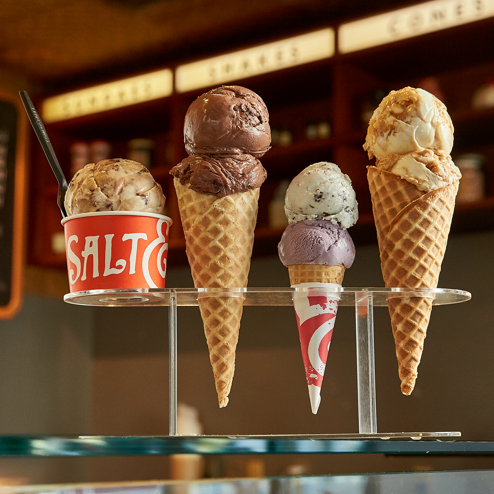
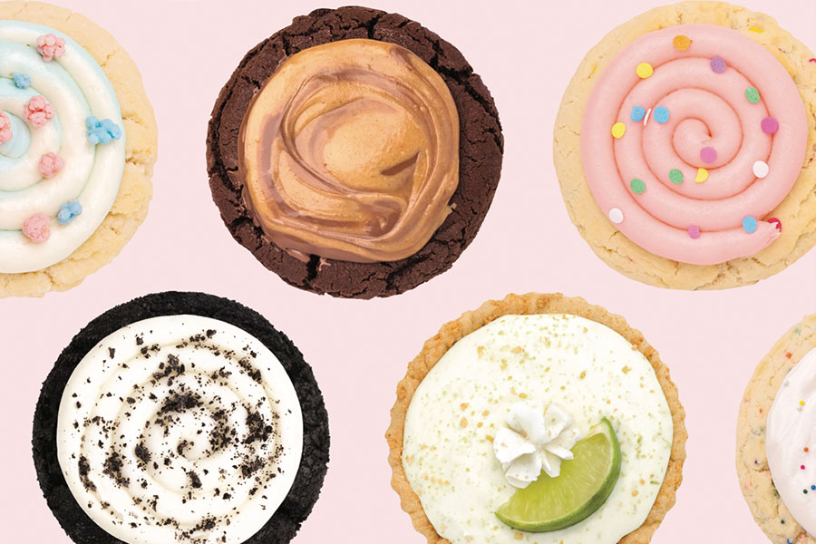

Salt and Straw:
Salt and Sraw has THE BEST dairy free ice cream (and regular ice cream) ever, and the most creative, delicous flavors.

crumbl cookies:
Crumbl has the best. cookies. ever. With new flavors weekly, crumbl never fails to have original cookies that are AMAZING. Whenever I am near a crumbl I have to get a 6 pack.

sidewalk juice:
Having been to sidewalk juice dozens of times, I find it ironic that I have never actually tried their juice. The real reason I go is for their amazing acai bowls. Their locations at SFO and throughout San Francisco never fail to deliver.